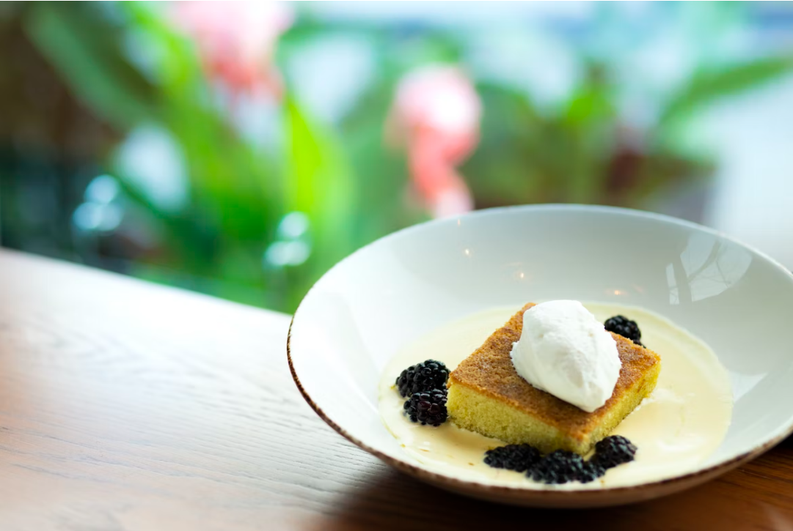

|

|
Procedure:
-
Preheat oven to 400°. Drizzle bottom and sides of pan with oil and use your fingers to coat. Line bottom with a round of parchment paper and smooth to eliminate air bubbles; coat parchment with more oil. Generously sprinkle pan with sugar and tilt to coat in an even layer; tap out excess. Whisk cake flour, almond flour, baking powder, baking soda, and salt in a medium bowl to combine and eliminate any lumps. Stir together amaretto, lemon juice, and vanilla in a small bowl.
- Using an electric mixer on high speed (use whisk attachment if working with a stand mixer), beat eggs, lemon zest, and 1 cup plus 2 Tbsp. sugar in a large bowl until mixture is very light, thick, pale, and falls off the whisk or beaters in a slowly dissolving ribbon, about 3 minutes if using a stand mixer and about 5 minutes if using a hand mixer. With mixer still on high speed, gradually stream in 1¼ cups oil and beat until incorporated and mixture is even thicker. Reduce mixer speed to low and add dry ingredients in 3 additions, alternating with amaretto mixture in 2 additions, beginning and ending with dry ingredients. Fold batter several times with a large rubber spatula, making sure to scrape the bottom and sides of bowl. Scrape batter into prepared pan, smooth top, and sprinkle with more sugar.
-
Place cake in oven and immediately reduce oven temperature to 350°. Bake until top is golden brown, center is firm to the touch, and a tester inserted into the center comes out clean, 40–50 minutes. Transfer pan to a wire rack and let cake cool in pan 15 minutes.
-
Poke holes all over top of cake with a toothpick or skewer and drizzle with remaining 2 Tbsp. oil; let it absorb. Run a thin knife around edges of cake and remove ring from pan. Slide cake onto rack and let cool completely. For the best flavor and texture, wrap cake in plastic and let sit at room temperature at least a day before serving.
Enjoy!
|
|
Even butter aficionados concede that olive oil produces excellent pastries.
Because EVOO is liquid at ambient temperature, it retains moisture better
over time. In fact, olive oil cake becomes better with age—this dairy-free
version will linger for days on your counter (not that it will survive that long).
Cooking Time: 1 hour 20 min
Difficulty: Easy
Origin of Dish: Mediterranean
|
Ingredient List
- 1 1/4 cups plus 2 tablespoons extra-virgin olive oil; plus more for pan
- 1 cup plus 2 tablespoons sugar; plus more
- 2 cups cake flour
- 1/3 cup almond flour or meal or fine-grind cornmeal
- 2 teaspoons baking powder
|
- 1/2 teaspoon baking soda
- 1/2 teaspoon kosher salt
- 3 tablespoons amaretto, Grand Marnier, sweet vermouth, or other liqueur
- 1 tablespoon finely grated lemon zest
- 2 teaspoons vanilla extract
|